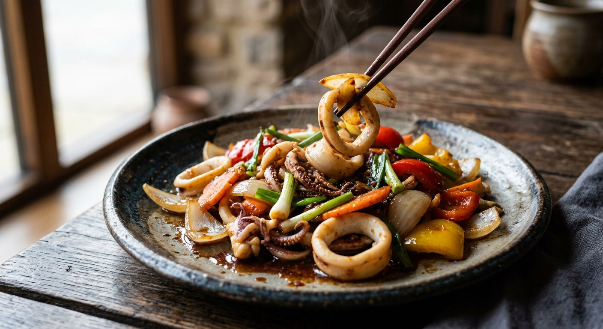

Roasted chilli paste fried until it breaks its oil, then squid, pork or whatever protein is in the fridge — the smoky-sweet stir-fry built from Thailand's favourite jar.

Thai cooks often drop the first word and call it just ผัดพริกเผา — but the full name says what it is: a stir-fry whose engine is nam prik pao, the roasted chilli paste of dried chillies, shallots and garlic fried in oil with tamarind and shrimp paste. It lives in a jar in Thai kitchens, used up spoon by spoon — on toast, in tom yum, and when the jar is nearly done, tipped into a wok. It is not a recipe so much as a template: onion and spring onion are the constants, and the protein is whatever the fridge has. Squid in Pim's recipe and Kapook's; a half-kilo of mixed seafood in the Lemon8 creator ปันกันปรุง's version; pork in Wongnai's most-read version of the dish (151,600 reads for Lek Pongwarodom's หมูผัดน้ำพริกเผา); chicken thighs in TrueID's ten-recipe roundup.
The technique that separates the real dish from a soupy imitation is what Thai cooks call แตกมัน — breaking the oil. Lemon8's version is explicit: fry the garlic golden, then add the paste alone and fry it over a medium heat for twenty to thirty seconds until its oil separates and the smell blooms; only then add a little water, then the seafood. Skip the step and the paste never opens up — the dish tastes flat and wet. The second rule is speed: Kapook's squid version goes in over a high flame with the paste added when the squid is only about 40% cooked, because the paste's heat finishes it. And the third rule, the one Western cooks break first: no sugar. Kapook spells it out — the dish "is not seasoned with sugar because nam prik pao is already sweet" — while Pim allows herself half a teaspoon, and warns the dish her way is deliberately not sweet.
The dish has its own arithmetic. Ajinomoto's development-kitchen card prints exact grams for two people — 160 g pork tenderloin, 15 g nam prik pao, 100 g onion, 20 g garlic — and 225 kcal, finishing with a splash of water so the paste clings to the meat in a glossy coating. TrueID's roundup goes the other direction entirely: its mushroom version builds the nam prik pao from scratch in the same article — 100 g of dried chillies, shallots, garlic, shiitake and oyster mushrooms fried in a cup and a half of oil with palm sugar, shrimp paste, fish sauce and tamarind. The jar, it turns out, is just the shortcut.
| Thai | English | Amount |
|---|---|---|
| ปลาหมึกสด | Fresh squid | 250 g |
| หอมหัวใหญ่ | Onion | 1 medium |
| พริกหวานสีแดง สีเหลือง | Red and yellow sweet peppers | ¼ cup |
| แครอท | Carrot | ¼ cup |
| โคนต้นหอม, ใบต้นหอม | Spring onion stems and leaves | 4 stems, 2 leaves |
| น้ำพริกเผา | Nam prik pao (roasted chilli paste) | 2 tbsp |
| น้ำปลา | Fish sauce | ½ tbsp |
| น้ำตาลทราย | Sugar | ½ tsp |
| น้ำมันหอยชนิดเข้มข้น | Oyster sauce, concentrated | ½ tbsp |
| กระเทียมไทย | Thai garlic, coarsely chopped | 7 cloves |
The no-sugar batch (Kapook): squid cut in pieces with pounded Thai garlic, nam prik pao added at 40% done over high heat, fish sauce and oyster sauce only — no sugar, since the paste is sweet; some cooks add red spur chilli for colour, and a salted-egg-yolk version exists. The seafood batch (Lemon8, ปันกันปรุง): ½ kg mixed shrimp, squid and mussels; 2 tbsp oil, 2 tbsp chopped garlic, 2 tbsp nam prik pao fried to break its oil before anything else, 2 tbsp oyster sauce, 1 tbsp seasoning sauce, ½ tbsp each fish sauce, thin soy and sugar, one onion, a handful of spring onion, 2 red spur chillies. The pork batch (Wongnai): 300 g pork for three, tenderloin recommended, with onion, spring onion, red spur chillies, dried chillies and garlic. The weighed pork batch (Ajinomoto): 160 g pork tenderloin, 20 g garlic, 100 g onion, 50 g carrot, 15 g nam prik pao, 15 g red spur chilli, 10 g each spring onion and holy basil, 5 g low-sodium seasoning powder — 225 kcal for two. The chicken batch (TrueID, from TomJoke FoodTV): 600 g chicken thighs with 2 tbsp each garlic, seasoning sauce and nam prik pao, plus onion, red spur chillies and spring onion.
To sugar or not to sugar. Kapook's rule is none at all — the paste is already sweet. Pim uses half a teaspoon but insists her dish is not sweet. Ajinomoto's method text adds palm sugar; Lemon8 seasons with half a tablespoon. Every cook balances against their own jar, which is why Pim warns that with Chua Hah Seng or another brand you must re-tune the seasonings.
When the paste goes in. Lemon8 fries the paste alone, before the seafood, until it breaks its oil. Pim, Kapook, Wongnai and Ajinomoto all add it onto the nearly-cooked protein. Both orders produce the dish; the first trades control for a bigger aroma, the second for less risk of burning the paste.
Water or none. Pim says no water at all — the squid brings its own. Kapook agrees by omission. Ajinomoto deliberately adds a splash so the paste coats the pork in a glossy, clingy finish. Lemon8's splash is purely to stop the paste burning while it breaks its oil.
The protein. Squid, mixed seafood, pork, chicken thighs, mushrooms, clams — all published under the same dish name. Wongnai's related recipes alone include clam, crab-and-shrimp and salted-egg-shrimp versions.
The finishing herbs. Holy basil appears only in Ajinomoto's pork version; ground pepper only in TrueID's chicken; Wongnai's pork adds dried chillies for heat; red spur chilli is the one decoration nearly everyone shares.
Ajinomoto disagrees with itself. Its ingredient card seasons with 5 g of low-sodium seasoning powder, but its own method text says fish sauce and palm sugar. Proof that even a development kitchen treats the seasoning as negotiable.
This recipe is translated from the following Thai-language sources. Where they disagree, we've said so.
1. ครัวบ้านพิม (Pim's Kitchen) — "ปลาหมึกผัดน้ำพริกเผา" (the recipe used here) — pim.in.th
2. Kapook — "ปลาหมึกผัดพริกเผา รสเข้มพร้อมเคล็ดลับหมึกกรอบเด้งไม่คาว" (the no-sugar rule and the 40% technique) — cooking.kapook.com
3. Wongnai — "สูตร หมูผัดน้ำพริกเผา" by Lek Pongwarodom (the pork version) — wongnai.com
4. Ajinomoto TH — "วิธีทำและสูตรผัดพริกเผาหมูเผ็ดหวาน ทานง่าย กลมกล่อม ครบรส อร่อยข้าวหมดหม้อ" (the weighed card and 225 kcal) — recipe.ajinomoto.co.th
5. Lemon8 — "ผัดทะเลพริกเผา (ผัดน้ำพริกเผา) สูตรทำง่าย รสเข้มข้น หอมกระเทียม" by ปันกันปรุง (the break-the-oil technique) — lemon8-app.com
6. TrueID Food — "แจกสูตรเด็ด 10 เมนู ผัดพริกเผา สูตรอาหารทำง่าย เผ็ดหวาน ครบรส โดนใจทั้งครอบครัว!" (the chicken batch and the from-scratch paste) — food.trueid.net